Recall - A/T Shift Cable Replacement
91acura02
April 22, 1991
BULLETIN NO.
91-024
YEAR MODEL VIN APPLICATION
1991 LEGEND See Vehicles
SEDAN Affected
RECALL: Automatic Transmission Shift Cable
PROBLEM
During a minor frontal collision, the engine and transmission will rock forward on the engine mounts. This is normal. However the transmission shift cable bracket may be damaged by this rocking even though there may be no visible damage to the car from the impact. If this bracket is damaged, the shift lever indicated position may not match the transmission gear position.
This circumstance could result in unanticipated movement of the car which could lead to an accident.
CUSTOMER NOTIFICATION
All owners of affected vehicles will be notified by mail of this recall. Owners will be asked to contact their nearest Acura dealer for repair of the defect. The customer letter is reproduced on the last page of this service bulletin.
VEHICLES AFFECTED
All Legend 4-door sedans equipped with automatic transmissions, through VIN:
JH4KA76.. MC014934
Please repair all affected vehicles in your inventory before retail sale.
PARTS INFORMATION
A/T Shift Cable Kit: P/N 06540-SPO-000
^ (1) A/T Shift Cable
^ (1) Transmission Stopper Weight
^ (1) Exhaust Flex Gasket
^ (1) Washer Bolt, 8 x 16 mm
^ (1) Flange Bolt, 10 x 16 mm
^ (1) Lock Plate, 6 mm
^ (2) Self-locking Cap Nuts, 8 mm
WARRANTY CLAIM INFORMATION
Op. Number Description F/R Time
214110 Automatic Trans. 1.0 hrs.
Shift Cable
- A if equipped with 0.2 hrs.
cellular telephone,
add
Failed P/N: 54315-SP0-A82
Defect code: 244
Contention code: J45
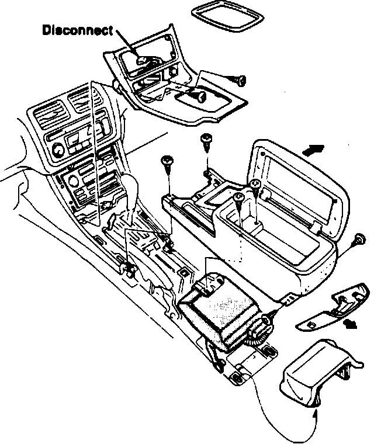
CORRECTIVE ACTION
Install a new shift cable and associated hardware included in the kit listed under PARTS INFORMATION.
In Car:
1. Remove the two mounting screws from the center console panel. Remove the shift indicator garnish and the center console panel. Disconnect the 6 pin connector.
2. Remove six mounting screws and remove the center armrest.
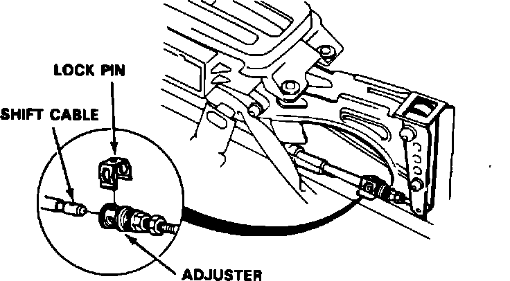
3. Move the shift lever to Reverse. Remove the shift cable adjuster lock pin.
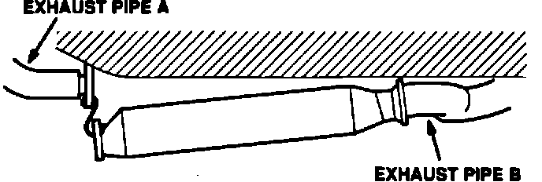
Under Car:
4. Raise the car on a hoist. Wrap a cloth around the muffler outlet pipes so they do not mar the bumper.
5. Remove the hangers from exhaust pipe B. Use Acura Rust Penetrant or silicone spray to ease removal.
6. Remove the front mounting bolts from the catalytic converter. Lower the front of the converter about 4 " and suspend it with a piece of wire.
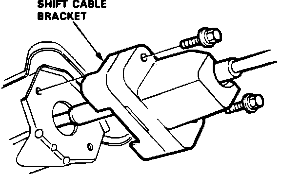
7. Remove the seven forward mounting bolts from the heat shield and let it rest on the converter. There is no need to loosen the two rear bolts.
8. Remove the tunnel beam (four bolts).
9. Remove two shift cable bracket bolts. Pull the cable out of the hole.
10. Disconnect the wire harness from the shift cable cover. Remove the two bolts and remove the shift cable cover.
11. Unbend the lock plate, then remove the control lever bolt.
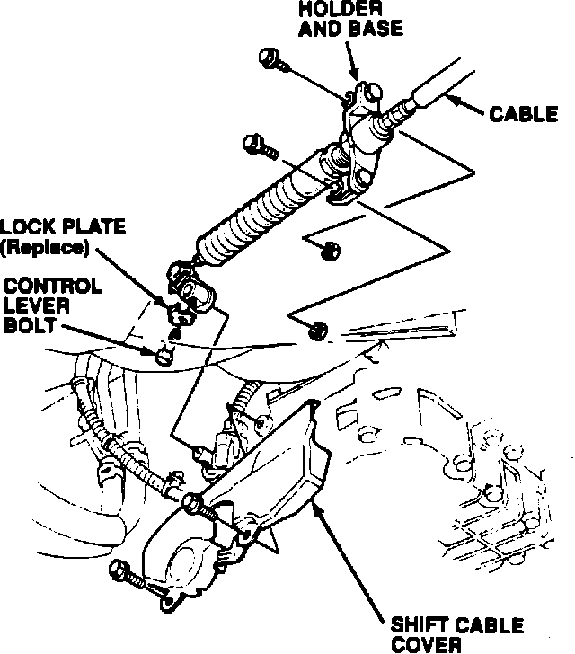
12. Remove the shift cable holder base mounting bolts from the transmission. Remove the shift cable, holder and base as an assembly. Do not unbolt the shift cable holder from the holder base.
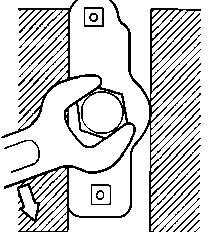
13. Clamp the cable/holder/base assembly in a vise. Loosen the locknut and remove the cable from the holder.
14. Install the new cable in the holder and tighten the locknut. Be careful to not deform the holder while tightening.
15. Insert the end of the cable into the floor tunnel hole. Install the shift cable bracket with two bolts.
16. Install the shift cable holder base on the transmission. Start the lower bolt first.
17. Install the shift control lever on the shaft with the original bolt. Use the new lock plate that came in the kit.
18. Install the shift cable cover. Reconnect the wire harness.
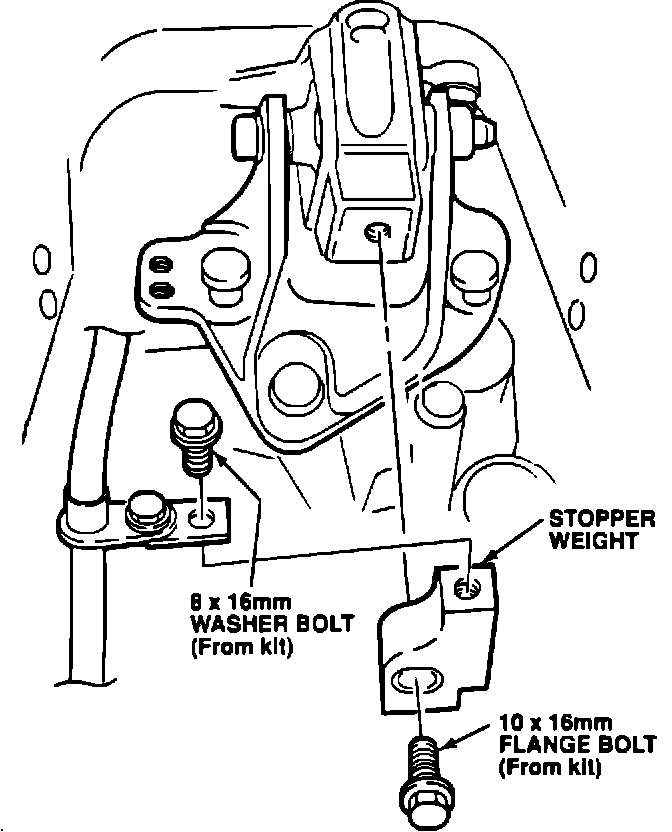
19. Remove the transmission stopper weight. Install the new stopper weight with the 10 x 16 mm flange bolt from the kit.
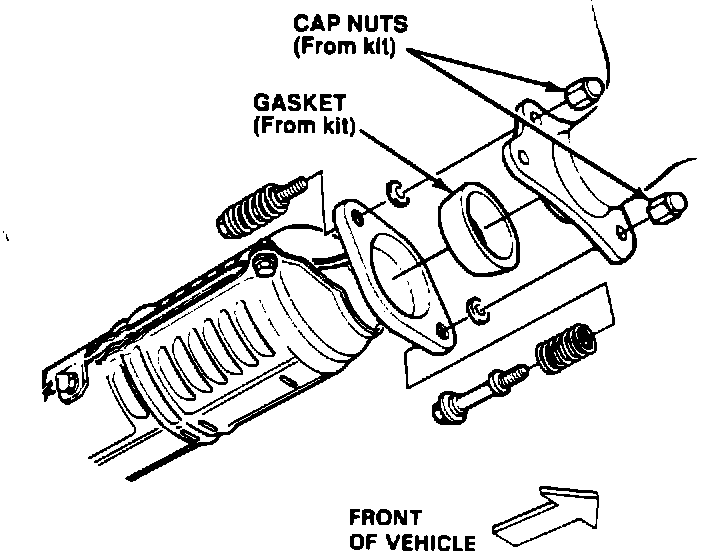
20. Attach the shift cable guide to the stopper weight. Use the 8 x 16 mm washer bolt from the kit.
21. Install the tunnel beam (four bolts).
22. Reinstall the heat shield to the floor (seven bolts).
23. Reconnect the catalytic converter to exhaust pipe
A. Use the new exhaust gasket and cap nuts from the kit.
24. Reinstall all hangers on exhaust pipe B. Make sure the exhaust system is suspended properly and moves freely with no interference.
25. Lower the car. Remove the cloth from the muffler outlet.
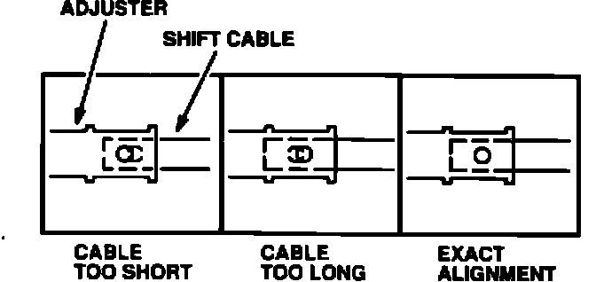
Cable Adjustment (in Car):
26. Attach the shift cable to the link with the lock pin.
27. Set the parking brake and press on the brake pedal so the car will not move. Start the engine and move the shift lever to Reverse. Turn off the engine.
28. Remove the lock pin from the cable adjuster. Check the alignment of the hole in the adjuster to the hole in the shift cable. If they are not perfectly aligned, loosen the locknut and adjust as needed. Tighten the locknut.
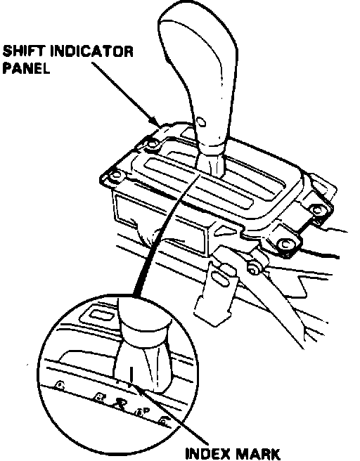
29. Reinstall the lock pin.
30. Press on the brake pedal, start the engine. Move the shift lever to Neutral. Verity that the index mark on the shift lever aligns with the N mark on the shift indicator panel when the transmission is in Neutral.
31. With your foot on the brake, shift slowly from Neutral to Reverse and Neutral to Drive. Using the R and D4 marks for reference, note the position of the shift lever index mark when the transmission engages each gear. Reverse and Drive should each engage an equal distance from Neutral. If one is closer than the other, remove the shift cable adjuster lock pin and adjust the linkage accordingly.
32. Do the following checks:
^ Try to start the engine in all shift positions. It should start only in Park and Neutral.
^ Shift to Park and turn off the engine. Try to rock the car. It should not move.
^ Try to shift from Neutral to Reverse without pressing the release button. It should not shift.
^ Verify the back-up lights only come on in Reverse.
^ Try to shift out of Park without pressing on the brake pedal. You should not be able to.
^ Insert the key in the console Shift Lock Release.
Verify that it works correctly.
^ Verify that the shift position indicator on the instrument panel shows the same gear position as indicated on the console.
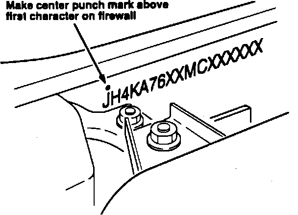
33. Reinstall the center armrest and the center console panel.
34. Center punch a completion mark above the first character of the VIN on the engine bulkhead.
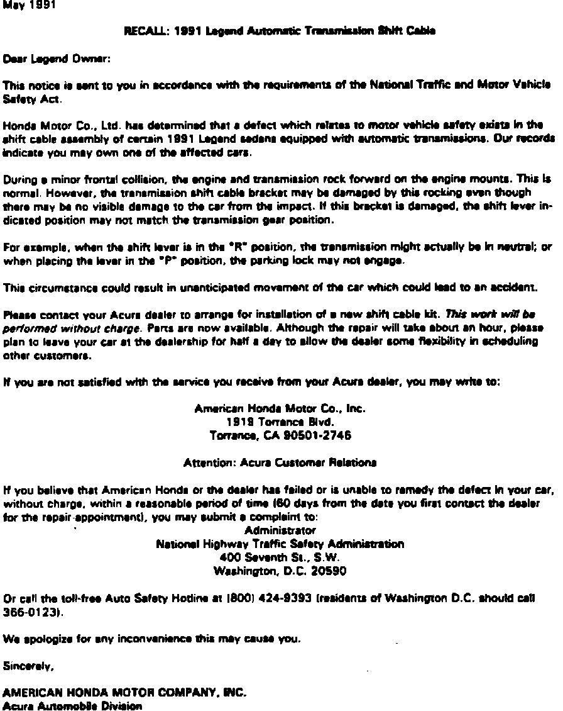
Example of customer letter: